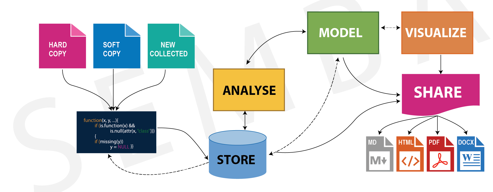

<script src="{{< blogdown/postref >}}index.en_files/header-attrs/header-attrs.js"></script>


<div id="tidyverse" class="section level1">
<h1>tidyverse</h1>
<p>While the base R packages includes many useful functions and data structures that you can use to accomplish a wide variety of data science task, the add–on <strong>tidyverse</strong> package supports a comprehensive data science workflow as illustrated in figure <a href="#fig:fig1">1</a>.</p>
<div class="figure"><span id="fig:fig1"></span>

<p class="caption">
Figure 1: Schematic drawing of the data science workflow
</p>
</div>
<p>Tidyverse is a coherent system of packages designed to address specific component of the workflow. Most of the package in the tidyverse were developed by Hadley Wickham <span class="citation">[-@tidyverse]</span>, and many other contributors. The core purpose of the tidyverse is to make statisticians and data scientists more productive by helping them through reproducible workflows that facilitate communication. In a nutshel, tidyverse focus about connecting the tools that make the coding workflows possible, through function that understand each other. It consists several packages for importing, tidying, transforming, exploring, and visualizing data. The packages in the tidyverse share a common philosophy of data and R programming, and are designed to work together naturally <span class="citation">[@r4d]</span></p>
<p>In this chapter we will have a glimpse of the core packages that are in the tidyverse, then we will look at them separately in the coming chapters. The packages that are extensively used in the tidyverse include</p>
</div>
<div id="readr" class="section level1">
<h1>readr</h1>
<p>The readr package provide a fast and friendly way to read tabular data into a structured data format. The package can read file from different format including comma seprated (.csv), tab delimited(.txt), white space seprated(.tsv) and more. Unlike R base, which import data as data.frame, readr package import and structure data in format called tibble. Tibbles are the tidyverse implementation of a data frame. They are similiar to data frame, but a bit more advanced version. Tibbles differs with data frame as they never convert data types of variables, they never change the names of the variables or create row names. Tibble also have a refined print out method that display the first ten rows and only variables that fit the size of the user screen.</p>
</div>
<div id="dplyr" class="section level1">
<h1>dplyr</h1>
<p>The dplyr package is an important tidyverse component as it is aimed at manipulating the data in stored in tibbles. It includes seven primary functions that simplify data transformation and manipulation. This includes tasks such as filtering rows, selecting variables, create new variables from existing ones, ordering rows by either ascending or descending, summarise, aggregating, joining tibbles with key variable and much more. Understanding core functions of dplyr will help to significantly reduce the time you spend on the data wrangling.</p>
</div>
<div id="tidyr" class="section level1">
<h1>tidyr</h1>
<p>The tidyr package reshape the data in a consistent format. Of many function it offers, the two widely used functions in this package are <code>gather()</code>, and <code>spread()</code>. The former function reformat the tibble data from wide form to long form, whereas the later reformat the long form to wide form. The core purpose of tidyr package is to ensure the tibble is in consistent format by ensuring tibble is in the form that:</p>
<ul>
<li>Each variable forms a column</li>
<li>Each observation forms a row</li>
<li>Each type of observational unit forms a table</li>
</ul>
</div>
<div id="ggplot2" class="section level1">
<h1>ggplot2</h1>
<p><strong>ggplot2</strong> is a package for creating graphics developed by Hadley Wickham <span class="citation">[@ggplot]</span>. Unlike most other graphics packages in R, ggplot2 is based on Leland Wilkinson’s <em>Grammar of Graphics</em>. <em>Grammar of Graphics</em> is a term used to express the idea of creating independent layers that are combined into a graphical display. The building blocks used in <strong>ggplot2</strong> to implement the <em>Grammar of Graphics</em> include data, aesthetics mapping, geometric objects, statistical transformation, scales, coordinate systems,labelling, themes, guides and faceting. These allows you to c onsistent syle for defining the garphics, a high level of abstraction for specifying plots, flexibility, a built–in themeing system for plot appearnace, mature and complete graphics system and access to many other extensions packages. This makes <strong>ggplot2</strong> very powerful because you are not limited to a set of pre–specified graphics, but you can create new graphics that are precisely tailored for your problem.</p>
<p>To make use of these package you must have installed tidyverse in your machine. If you lack the tidyverse packages in your machine, you can install a complete tidyverse from CRAN with code written as:</p>
<pre class="r"><code>install.packages(&quot;tidyverse&quot;)</code></pre>
<p>On your own computer, type that line of code in the console, and then press Enter to run it. R will download the packages from CRAN and install them onto your computer. Since tidyverse is an ecosystem, it will install all of the packages that are part of the tidyverse. Make sure your computer is connected to the internet when you want to install package, otherwise you will get an error.</p>
<p>To use the functions in the tidyverse, you must first load it into your R session using the <code>require()</code> function</p>
<pre class="r"><code>require(tidyverse)</code></pre>
<p>Once you run the code above, you will get the notification in the console of informing you that tidyverse had loaded the <strong>ggplot2</strong>, <strong>tibble</strong>, <strong>tidyr</strong>,<strong>readr</strong>, <strong>purrr</strong>, <strong>dplyr</strong>, <strong>stringr</strong>, and <strong>forcats</strong> packages. These packages contains functions that are widely used for importing, manipulate, transform, model data and visualize results of the nalysis in almost every R session. The message also indicate the functions <code>filter()</code> and <code>lag()</code></p>
</div>
